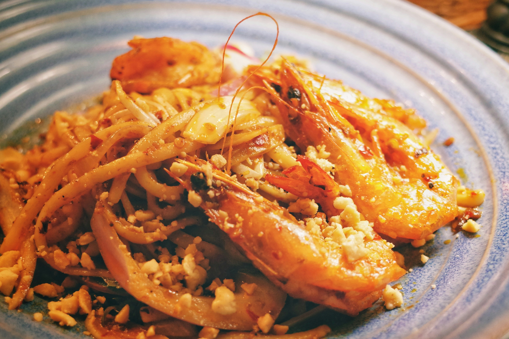

Garlic Butter Shrimp Pasta
Description
Garlic Butter Shrimp Pasta is a deliciously simple dish that brings together bold flavors and satisfying textures in under 30 minutes. Succulent shrimp are sautéed in a rich garlic butter sauce with a hint of heat from red pepper flakes, then tossed with perfectly cooked pasta to create a comforting and elegant meal. The addition of fresh lemon juice brightens the dish, while Parmesan cheese adds a savory depth, making every bite irresistibly flavorful.
This recipe is perfect for busy weeknights or casual dinner parties when you want something impressive but easy to prepare. With minimal ingredients and quick cooking time, it proves that great food doesn’t have to be complicated. Whether served with a crisp green salad or a glass of white wine, Garlic Butter Shrimp Pasta is a go-to dish that never disappoints.
Ingredients
- 8 oz (225g) spaghetti or your favorite pasta
- 1 lb (450g) shrimp, peeled and deveined
- 3 tbsp butter
- 4 garlic cloves, minced
- 1/4 tsp red pepper flakes (optional)
- 1/4 cup grated Parmesan cheese
- 2 tbsp fresh parsley, chopped
- Salt and pepper to taste
- Juice of half a lemon
Steps
- Cook pasta according to package instructions until al dente. Drain and set aside.
- In a large skillet, melt butter over medium heat. Add minced garlic and red pepper flakes; sauté for about 1 minute until fragrant.
- Add shrimp to the skillet, season with salt and pepper, and cook for 2-3 minutes per side until pink and cooked through.
- Toss the cooked pasta into the skillet with shrimp. Add lemon juice, Parmesan cheese, and parsley. Mix everything well.
- Serve hot with extra Parmesan if desired.